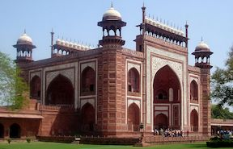
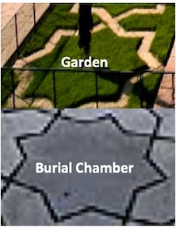
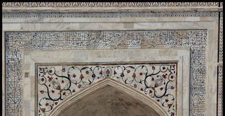

Similar to the interior of the complex, the exterior exhibits many geometric traits as well with regards to both layout and decoration. When looking at a map of the complex, one would notice how it is divided into 3 unique sections. In this picture, the section on the left is the entrance, the middle section is the garden, and the last section contains the temple, mosque, and guest house. Dividing the complex into three sections allows for a precise distinction of each area’s purpose.
The entrance has a large opening, inviting the visitors to come inside. It is also fully symmetric with respect to the major axis of the complex, maintaining that theme of symmetry. One can also see part of the garden from the entrance, giving the visitors a taste of what is to come when they walk through the gate. The red sandstone Great Gate is also surrounded by octagonal minarets. This is very similar to the temple itself, and contributes to the aforementioned fractal concept that the complex exhibits, in which there are many objects that exhibit the same patterns at different scales. This further supported by the fact that the minarets are topped by marble domes like the minarets of the tomb, and even have similar finial designs.
The garden is beautiful both geometrically and to the senses. The trees are aligned in very clear, systematic rows, and the garden is topped off with long reflective pools1. All these add to the overall minimalistic beauty of the garden, but something that enhances the beauty of the garden even more is all of the geometry that is involved. The garden is split into four large sections by the canals, and then each section is split into four more sections. This is another feature that contributes to the overall geometric fractal theme of the complex. There is a pattern of squares on multiple scales, just like how there is a pattern of domes on multiple scales on top of the temple. These well planned layouts add on to the overall beauty because they naturally appeal to our minds, and are pleasing to look at.
The main water channel has many trees around its perimeter, and each tree has a star shape cut into its surrounding grass, these star shapes are very similar to the aforementioned star shaped tiles inside of the temple. Since the inside of the temple and the outside both have these shapes, the designers are connecting the inside to the outside in a subtle, creative way, and also contributing to the fractal them since these shapes on the outside are just scaled up versions of the tiles. Additionally, the perimeter of the water channel has a pattern that alternates between single stars and conjoined stars. This pattern is also around the perimeter of the cenotaphs within the inner burial chamber, demonstrating another way of how geometry is used to create beauty and functionality within the complex. The water channel also creates another axis of symmetry within the garden. After walking through the marvelous entrance, an individual would see the reflective pool and the temple. The reflective pool creates a perfect reflection of the temple when viewed from the center, and this provides an aesthetically pleasing effect on the viewer because there is now symmetry with respect to the major axis of the garden and now with the plane that the earth itself forms.
The buildings also have many geometric decorations around the outside of the them as well, and these complement the geometric decorations on the inside. In this picture, there are many flowers surrounding the entrance, just like the flowers inside of the buildings. This once again connects the inside to the outside, and they have multiple forms of symmetry. Additionally, the flower stems incorporate circular geometry just like the ceiling paintings within the buildings. The circular design also goes well with the circular calligraphy that surrounds it, almost acting as an extension of the calligraphy.
1. “The Taj Mahal,” History.com,
http://www.history.com/topics/taj-mahal.